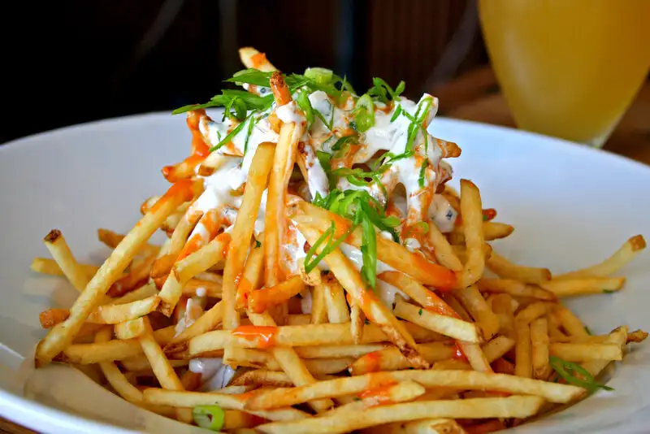
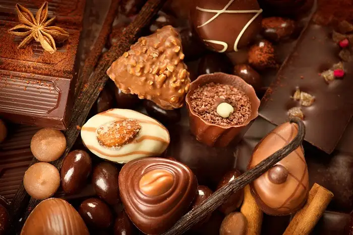
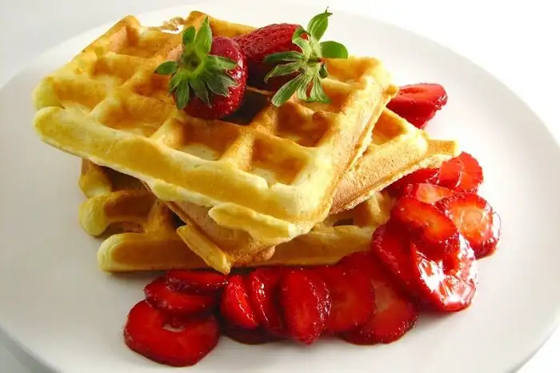

This is somewhat the national food of Belgium. No one calls it ‘French Fries’ there, even in English. The Belgium-perfected way of fries is a two-step frying process to perfect the inner and outer crunchiness as well as the softness. It is one from the list of Belgium vegetarian food. There is an annual voting of which restaurant or stall makes the best fries. One Belgian food fact is that the fries are a Belgian invention and not French. Although the Belgians have no actual proof they do however make the best fries in the world.
Talking about sweets, Belgian chocolate can never be left out. Being produced since the 19th century, it is a major part of the economy and Belgian cuisine. Since then, the cuisine has evolved to fit chocolate in many of its desserts such as the pralines, which are soft with a chocolate casing. Truffles are ball-shaped desserts with wafers or cream filled crust. Relishing these creamy and chocolaty delights in their country of origin, is definitely one of the best things to do in Belgium. Also, they are available in many places.
Waffles are like Belgium local food. There are two varieties of waffles, the rectangular ones which aren’t as sweet as the other variety but are topped with chocolate, cream, and various grated fruits. The other variant is small and has sugar crystals ingrained, so is more on the sweeter side. This is found almost everywhere, with many places having a unique taste to it. Just avoid extra toppings to get the pure sweet taste of the waffles.
